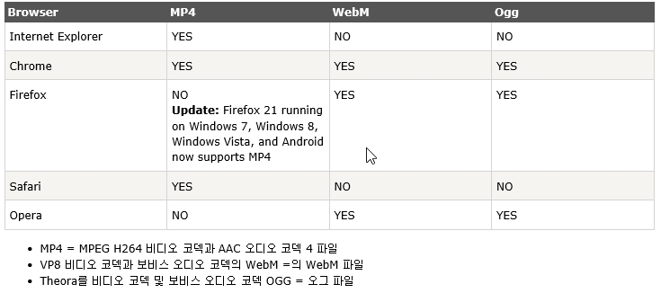
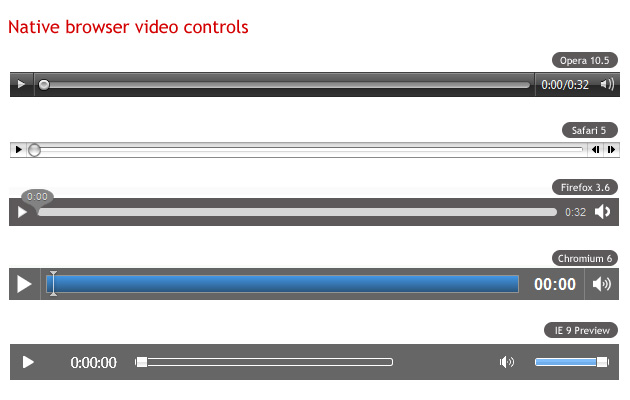

HTML5 에서는 플러그인이 필요 없이 웹페이지에 video 표현이 가능해 졌습니다. 여기서 플러그인이란 vidio를 보여주기 위해 브라우저에 설치가 되는 프로그램을 말합니다.(플래시 등..)
HTML5 에서는 멀티미디어 라는 개념을 보편화 시키려 하는듯 합니다. 좀 더 편하게 프로그램 설치 없이 오디오,비디오를 넣어 웹 페이지에 보여주자는 것입니다.
허나 아직 브라우저 별로 지원여부가 달라서 모든 브라우저가 지원될 때 까지는 시간이 걸리겠죠.

mp4 와 ogg 두가지를 사용하면 다 지원이 되겠네요. 익스플로러9 이상만 지원합니다.
<video src="파일주소">브라우저에서 비디오를 지원하지 않습니다.</video>
하나의 파일 재생시엔,
<video src="파일주소" width="가로" height="세로(높이)" 재생속성>브라우저에서 비디오를 지원하지 않습니다.</video>
좀더 응용하자면,
<video width="가로" height="세로(높이)" 재생속성>
<source src="파일주소" type="MIME 타입">
<source src="파일주소" type="MIME 타입">
브라우저에서 비디오를 지원하지 않습니다.
</video>
이런 형식으로 사용하여 웹 상으로 표현 됩니다.
autoplay - 자동 재생, loop - 반복 재생, poster - 비디오 재생 전의 이미지 파일경로,
controls - 재생, 정지등 비디오 컨트롤을 표시합니다.
preload - 동영상 파일 재생시 다운로드 여부지정
(auto-자동, none-사용자가 컨트롤을 조작하지 전까지 다운 금지, metadata-메타데이터를 가져옴. 사용자가 컨트롤 조작시 다운)

이미지를 기초한 예제
<video width="326" height="254" controls poster="곰.gif">
<source src="영상.mp4" type="video/mp4">
<source src="영상.ogg" type="vidio/ogg">
브라우저에서 비디오를 지원하지 않습니다.
< /video>
<비디오 태그 시작, 가로 326px, 세로(높이) 254px, 컨트롤러 표시, 재생전 정지화면일때 곰.gif 를 보여줌.>
<영상으로는 영상(mp4,ogg)를 재생하며, 타입 설정.>
지원되지 않는 브라우저에 지원 안됨 표시.
<비디오 태그 마침>
이런 식으로 표현 됩니다.
오디오,비디오 HTML5 에선 간단하게 표현 될 수 있어서 좋네요. 참고로 브라우저마다 일관성을 맞추려 video.js 라는 스크립트를 사용하여 구성 합니다. 오디오, 비디오 부분은 자바스크립트와 연계가 되어야 좋은 품질이 되는군요.